| 日付 | 2023年11月4日（土） |
|---|---|
| 山域 | 西上州 |
| メンバー | 単独 |
| 山行形態 | 日帰り |
| アクセス | 車 |
| ルート (Map) | 天丸橋 (8:48) - (10:17) 大山 - (11:10) 天丸山 - (12:45) 帳付山 (13:24) - (14:11) 馬道のコル - (14:59) 社壇乗越 - (15:24) 天丸橋 |
帳付山は西上州の奥地にあるマイナーな山だ。
その存在は昔から知っていたが、アクセスが不便なことと
歩く距離の長さ、難易度の高さから登る機会がなかった。
今回、近くの大山、天丸山と合わせて登ってみることにする。
夏休み以来の2ヶ月半振りの山登りだ。
天丸橋の近くのスペースに車を停める。標高1000m。
駐車スペースの奥が登山口だ。
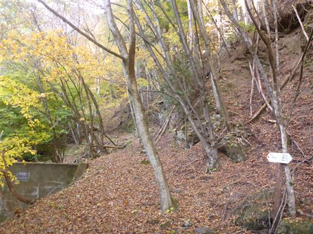
最初は沢沿いを登って行く。
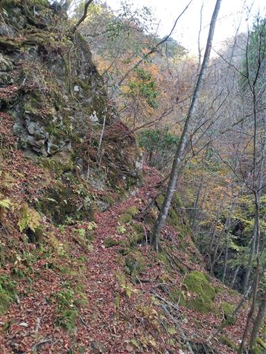
沢筋は少し荒れているが、登山道は割と明瞭だ。
周囲は紅葉が美しい。持っているカメラが不調で、スマホのカメラに切り替える。
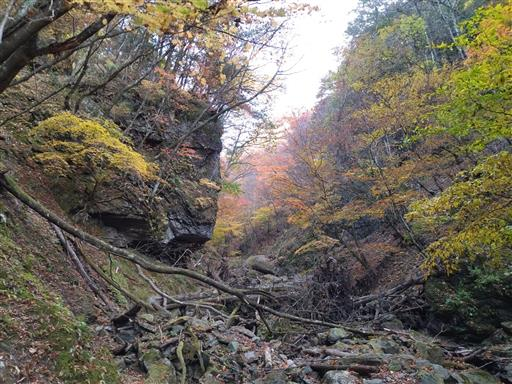
小さな滝。
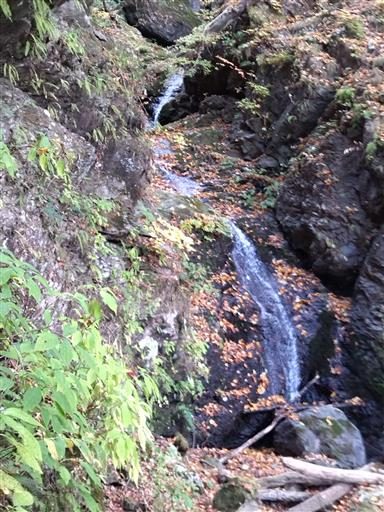
登山道は崖の縁に付けられていて、落ちると危険だ。
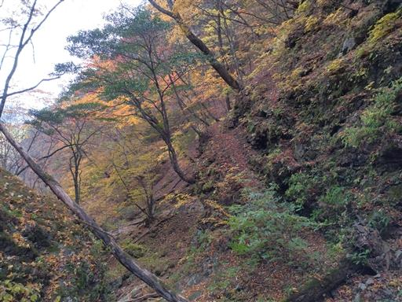
大山と天丸山との分岐点。まずは大山を往復する。
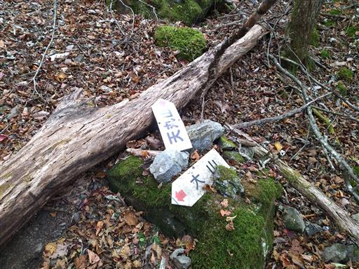
大山山頂へは岩場を超える必要があるが、難易度は高くない。
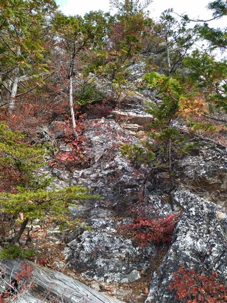
岩場の途中からは展望が広がる。赤岩尾根の向こうに両神山が聳えている。
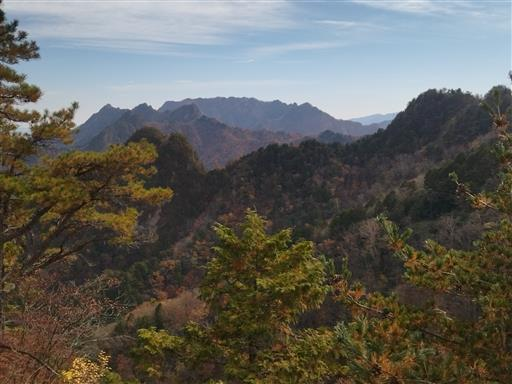
大山山頂直前は登山道が分かりづらい。
小ピークから下って登ると、大山山頂に到着する。標高1540m。
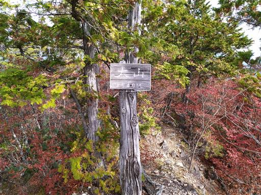
山頂は狭いが展望はそこそこ開けている。
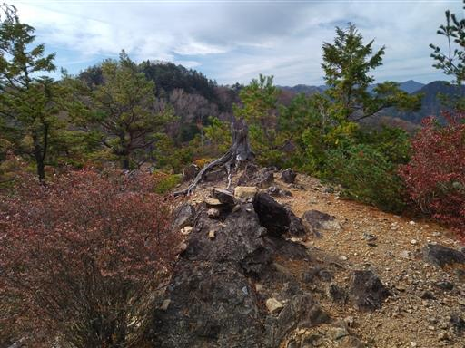
遠く浅間山が見えている。
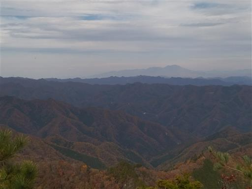
周囲は紅葉が見頃だ。
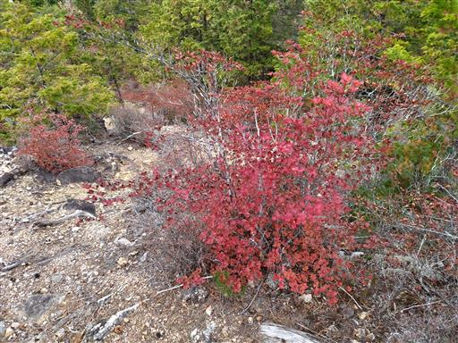
大山の次は天丸山を目指す。
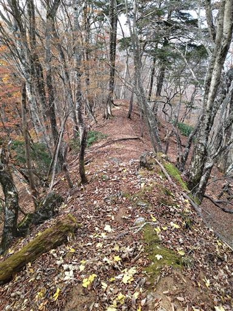
天丸山と帳付山の分岐点に到着。ここから天丸山を往復する。
この辺りの標識は木に埋め込まれていて、ちょっと木がかわいそうだ。
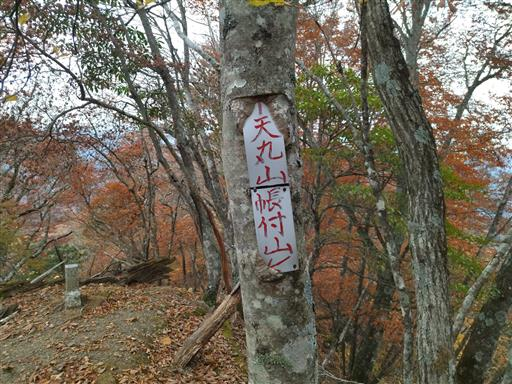
尾根をしばらく歩くと巨大な岩壁に突き当たる。
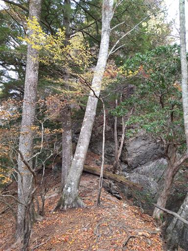
この岩をどう回り込むのかと思ったら、登山道は岩壁を直登している。
結構長い岩場で、傾斜もきつく、高度感がある。
鎖ではなくロープなので、掴みにくいのも嫌らしい。
手足をかける場所がそこそこあるのでロープ無しでも登れるが、下りはちょっと難しい。
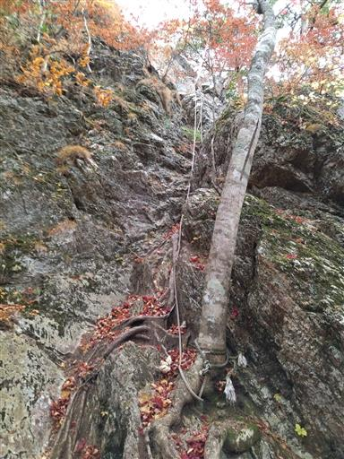
古い案内板。昭和52年に県自然環境保全地域に指定されたようだ。
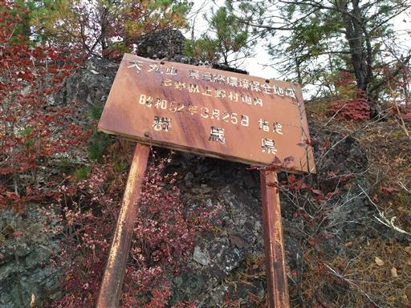
岩場に多い松が生えており、松ぼっくりがたくさん落ちている。

長い岩場を登ると、そこが天丸山の山頂だ。標高1506m。
久々に高度感のある岩場を登った。
山頂は樹林に覆われていて展望はあまり開けない。
30年ほど前に山火事があったそうだが、その面影はない。
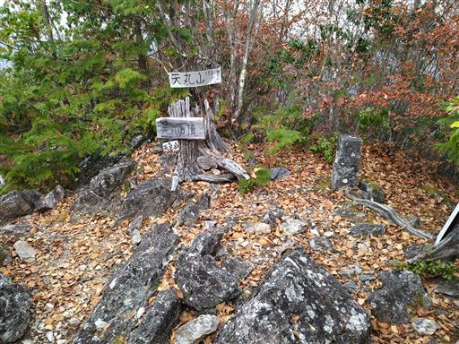
下山は岩場の下りから始まる。慎重に通過。
樹木があるため、真下はあまり見えない。
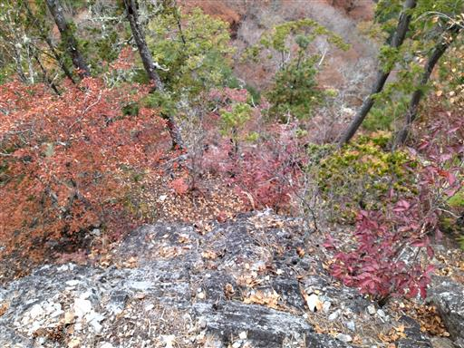
少しロープにも頼りながら下っていく。
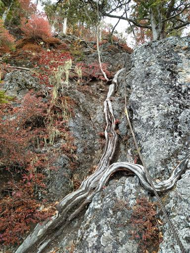
大きな洞を持つ木。往路では気付かなかった。
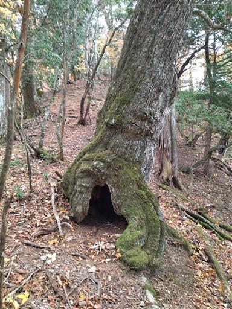
天丸山の次は帳付山を目指す。周囲は紅葉がきれいだ。
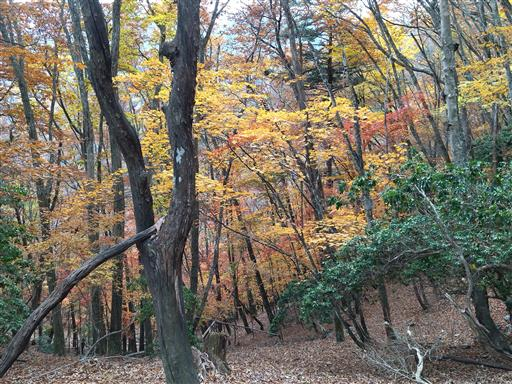
帳付山までの尾根道は痩せ尾根が続く。
尾根の上を歩いたり、巻道になったりで、結構歩きづらい道だ。
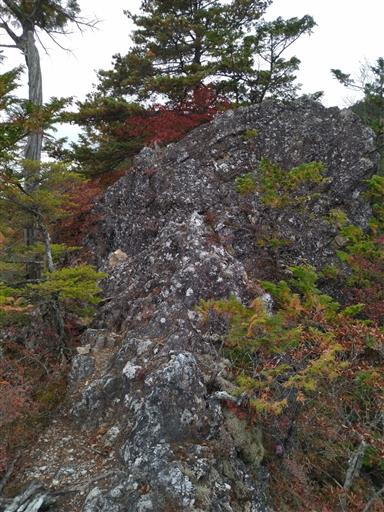
巻道。まるで嫌がらせのように、木の幹が登山道を塞いでいる。
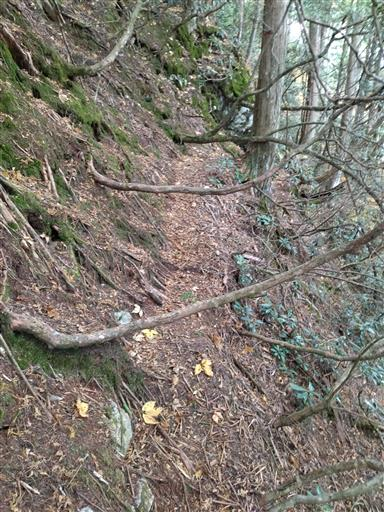
こちらの岩場は絶妙に邪魔な位置に木が生えている。
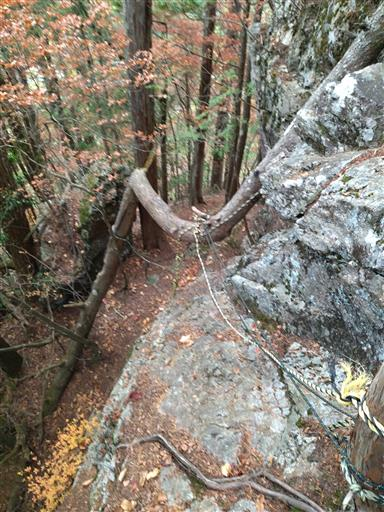
痩せ尾根が続く。西上州らしい難易度の高い登山道だ。
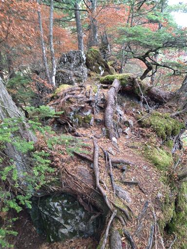
帳付山山頂に到着する。標高1619m。
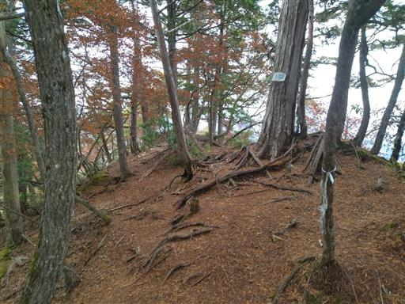
山頂は展望が広がらないが、少し先に展望が広がる岩棚がある。
快晴ではなく、絶景とは言わないが、周囲の山々を眺めながら昼食をとる。
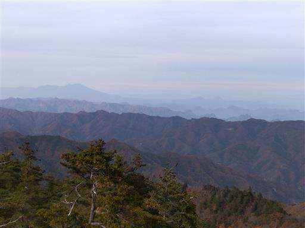
こちらは先ほど登った天丸山（左）と大山（右）。どちらも岩山であることがよく分かる。
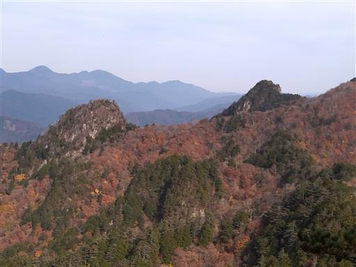
馬道のコルまで引き返したら、往路とは道を変えて馬道を下る。
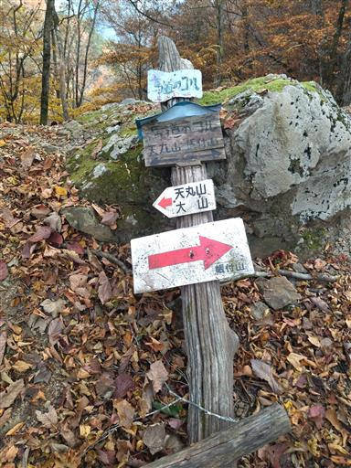
間近に天丸山が聳えている。迫力のある姿だ。
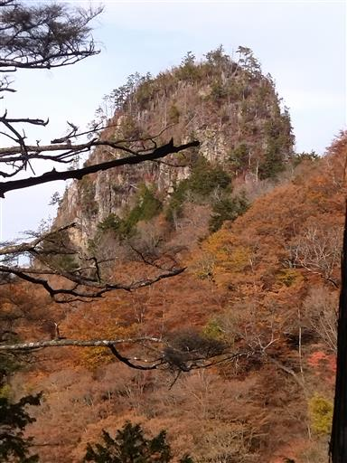
馬道はこれまでの登山道とは打って変わって非常に歩きやすい道だ。
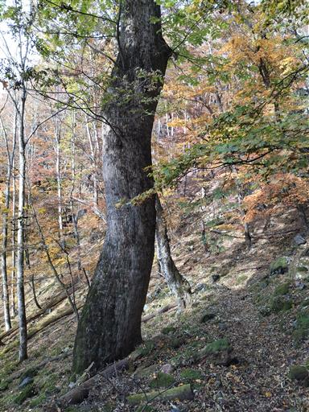
周囲は紅葉真っ盛り。
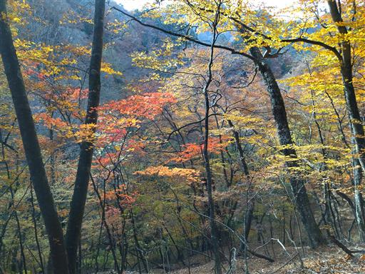
紅葉に包まれた登山道を下る。
ここでカメラが復活し、ようやく目に見える色と似た写真が撮れるようになる。
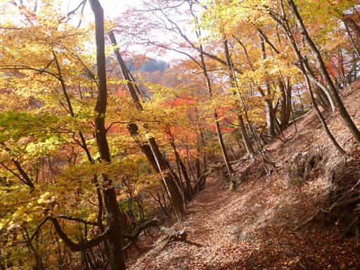
社壇乗越に到着。ここは立派な車道が通っているが、封鎖されているため通る車はない。
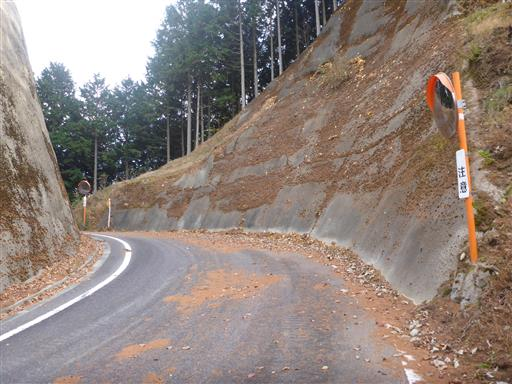
あとは駐車スペースまで車道を歩く。遠くに見えているのは赤岩尾根の辺りだろうか？
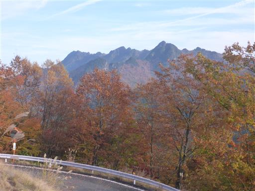
見事な紅葉。
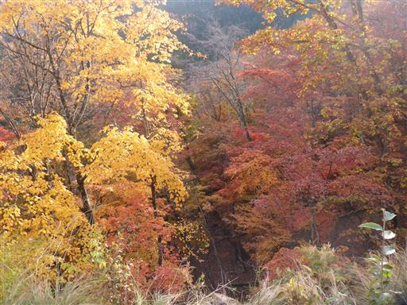
路上には落ち葉が降り積もっている。
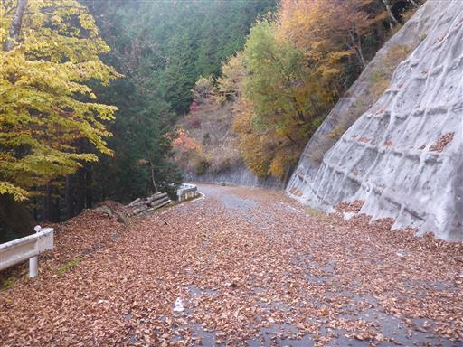
頭上に大山が聳えている。
小さな岩山だと思っていたが、ここから見ると確かに大山と言えるほど存在感がある。
このまま車道を歩いて駐車スペースに戻る。
あまり事前の情報なく登ったため、天丸山の長い岩場には少し驚いた。
帳付山への尾根道も結構骨があり、充実した山行だった。
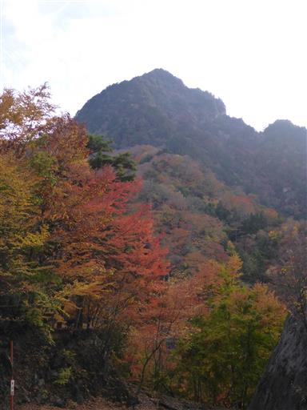